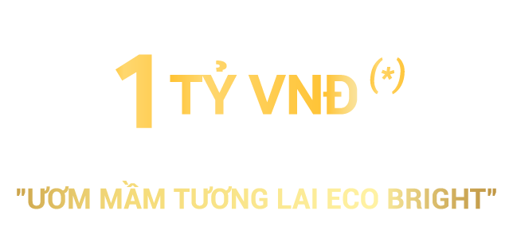

<div class="background">
  <div class="container">
    <div class="row">
      <div class="col-6">
        <div class="inner-col">
          
        </div>
      </div>

      <div class="col-6">
        <div class="inner-col">
          
        </div>
      </div>
    </div>

    <div class="row">
      <div class="col-12 format-text pt-4">
        <p class="h4">THỂ LỆ CHƯƠNG TRÌNH</p>
        <p class="pt-4 pb-4">Xuân Mai Sài Gòn ươm mầm và vun đắp cho những giấc mơ của các cư dân nhí Eco Green Saigon.
          Chúng
          tôi coi đó là
          trách
          nhiệm trong hành trình xây dựng cộng đồng ưu tú của Eco Green Saigon. Với mỗi căn hộ tìm được chủ nhân, chúng
          tôi sẽ
          dành tặng 5 triệu đồng “Quỹ học bổng Ươm mầm Tương lai Eco Bright”. Tổng ngân sách của chương trình lên đến 1
          tỷ
          đồng.</p>
        <p>
          “Quỹ học bổng Ươm mầm Tương lai Eco Bright” sẽ trao tặng nhiều học bổng giá trị cho cư dân là học sinh Cấp I,
          Cấp II, Cấp III có thành tích xuất sắc tại các kỳ thi học sinh giỏi cấp Quốc tế, Quốc gia và Thành phố. CĐT
          Xuân
          Mai Sài Gòn sẽ tiếp nhận hồ sơ xét thưởng của cư dân Eco Green Saigon (khách hàng hoàn tất thủ tục đặt mua dự
          án) và trao học bổng vào tháng 9 hằng năm.
        </p>

      </div>

    </div>
  </div>


</div>